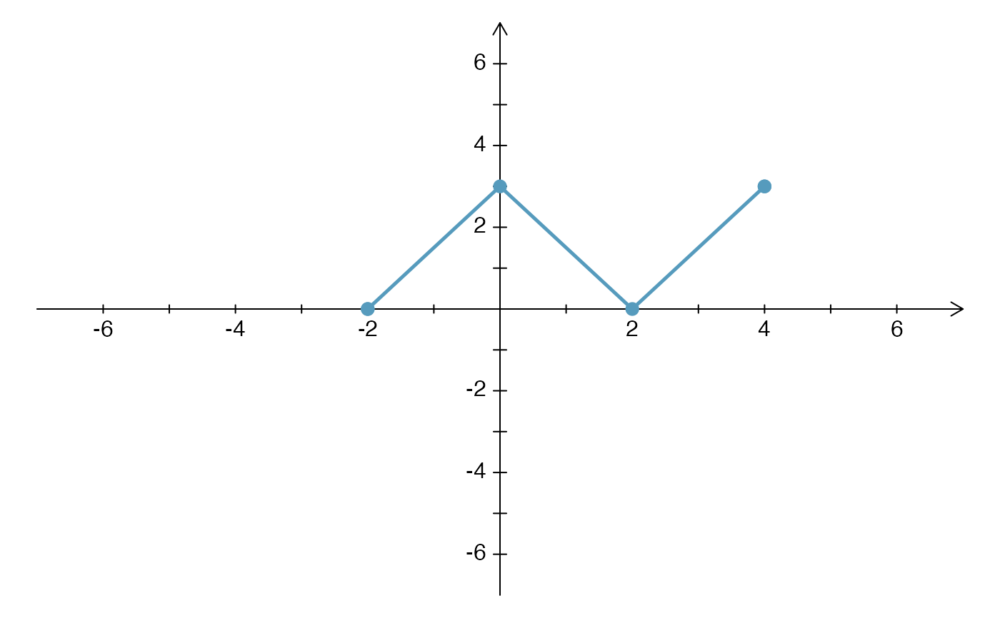
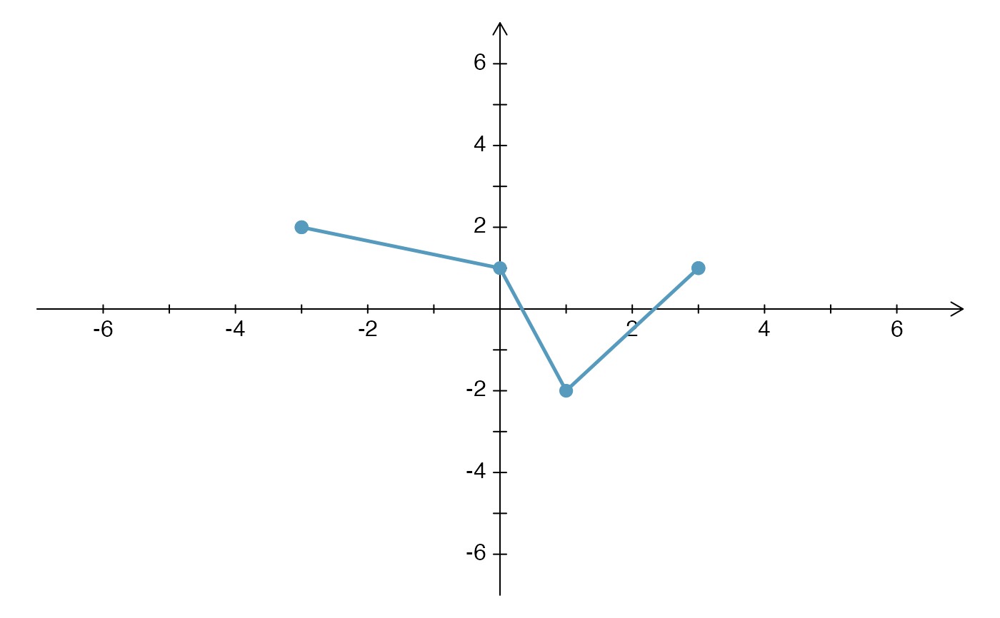
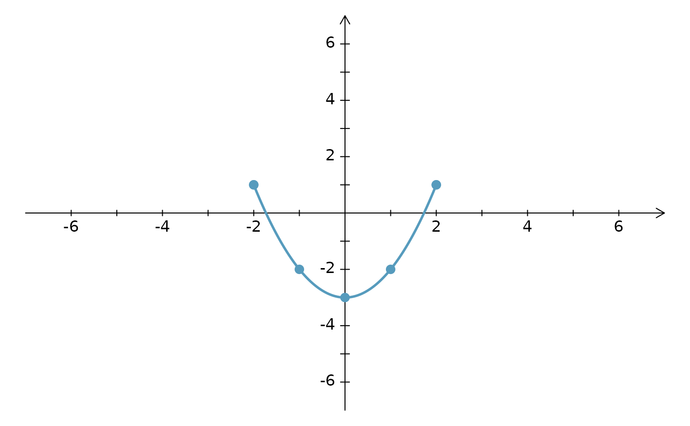

Similar to lines, this function will include
endpoints that are solid points, open points, or arrows (mix-and-match
ready).
ArrowLines( x, y, lty = 1, lwd = 2.5, col = 1, length = 0.1, af = 3, cex.pch = 1.2, ends = c("a", "a"), ... )
| x | A vector of the x-coordinates of the line to be drawn. |
|---|---|
| y | A vector of the y-coordinates of the line to be drawn. This vector
should have the same length as that of |
| lty | The line type. |
| lwd | The line width. |
| col | The line and endpoint color. |
| length | If an end point is an arrow, then this specifies the sizing of
the arrow. See the |
| af | A tuning parameter for creating the arrow. Usually the default
( |
| cex.pch | Plotting character size (if open or closed point at the end). |
| ends | A character vector of length 2, where the first value
corresponds to the start of the line and the second to the end of the line.
A value of |
| ... | All additional arguments are passed to the
|
David Diez
